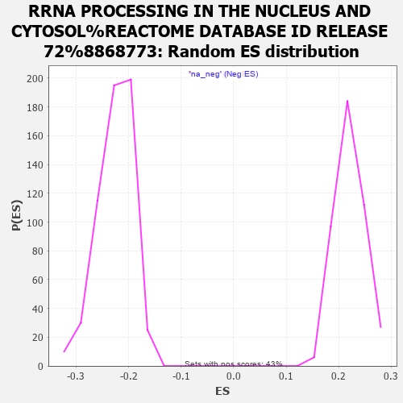

| | | Dataset | ASXL1_gsea_list |
| Phenotype | NoPhenotypeAvailable |
| Upregulated in class | na_pos |
| GeneSet | RRNA PROCESSING IN THE NUCLEUS AND CYTOSOL%REACTOME DATABASE ID RELEASE 72%8868773 |
| Enrichment Score (ES) | 0.61396015 |
| Normalized Enrichment Score (NES) | 2.7783716 |
| Nominal p-value | 0.0 |
| FDR q-value | 0.0 |
| FWER p-Value | 0.0 |
Table: GSEA Results Summary
 Fig 1: Enrichment plot: RRNA PROCESSING IN THE NUCLEUS AND CYTOSOL%REACTOME DATABASE ID RELEASE 72%8868773
Fig 1: Enrichment plot: RRNA PROCESSING IN THE NUCLEUS AND CYTOSOL%REACTOME DATABASE ID RELEASE 72%8868773
Profile of the Running ES Score & Positions of GeneSet Members on the Rank Ordered List
| PROBE | GENE SYMBOL | GENE_TITLE | RANK IN GENE LIST | RANK METRIC SCORE | RUNNING ES | CORE ENRICHMENT | | 1 | WDR12 | | | 244 | 4.139 | -0.0003 | Yes |
| 2 | RPS27A | | | 447 | 3.712 | 0.0007 | Yes |
| 3 | RCL1 | | | 454 | 3.700 | 0.0151 | Yes |
| 4 | RPP25 | | | 548 | 3.518 | 0.0228 | Yes |
| 5 | PELP1 | | | 595 | 3.424 | 0.0333 | Yes |
| 6 | RPL17 | | | 646 | 3.341 | 0.0433 | Yes |
| 7 | RPL27A | | | 684 | 3.303 | 0.0540 | Yes |
| 8 | RPSA | | | 744 | 3.226 | 0.0628 | Yes |
| 9 | RPS12 | | | 748 | 3.224 | 0.0755 | Yes |
| 10 | RPL13A | | | 895 | 3.080 | 0.0778 | Yes |
| 11 | NAT10 | | | 1011 | 2.959 | 0.0817 | Yes |
| 12 | RPS29 | | | 1053 | 2.907 | 0.0905 | Yes |
| 13 | NOB1 | | | 1063 | 2.897 | 0.1015 | Yes |
| 14 | RPL11 | | | 1132 | 2.837 | 0.1082 | Yes |
| 15 | DDX21 | | | 1144 | 2.829 | 0.1188 | Yes |
| 16 | PWP2 | | | 1162 | 2.810 | 0.1289 | Yes |
| 17 | RPL8 | | | 1188 | 2.776 | 0.1383 | Yes |
| 18 | RPLP2 | | | 1195 | 2.771 | 0.1490 | Yes |
| 19 | WDR75 | | | 1361 | 2.607 | 0.1480 | Yes |
| 20 | NOL11 | | | 1428 | 2.548 | 0.1537 | Yes |
| 21 | EXOSC1 | | | 1440 | 2.539 | 0.1631 | Yes |
| 22 | RPL39L | | | 1459 | 2.517 | 0.1720 | Yes |
| 23 | FAU | | | 1524 | 2.456 | 0.1774 | Yes |
| 24 | GNL3 | | | 1539 | 2.446 | 0.1862 | Yes |
| 25 | RPL12 | | | 1617 | 2.373 | 0.1904 | Yes |
| 26 | RPL26 | | | 1687 | 2.305 | 0.1949 | Yes |
| 27 | RPS24 | | | 1742 | 2.264 | 0.2003 | Yes |
| 28 | NOP58 | | | 1757 | 2.253 | 0.2083 | Yes |
| 29 | RIOK2 | | | 1758 | 2.252 | 0.2174 | Yes |
| 30 | RPL10 | | | 1787 | 2.229 | 0.2244 | Yes |
| 31 | RPS21 | | | 1801 | 2.218 | 0.2324 | Yes |
| 32 | TBL3 | | | 1811 | 2.212 | 0.2406 | Yes |
| 33 | RPL14 | | | 1850 | 2.187 | 0.2468 | Yes |
| 34 | EXOSC5 | | | 1910 | 2.152 | 0.2513 | Yes |
| 35 | RPL30 | | | 1954 | 2.119 | 0.2568 | Yes |
| 36 | RPL36AL | | | 1979 | 2.098 | 0.2636 | Yes |
| 37 | WDR43 | | | 1993 | 2.083 | 0.2710 | Yes |
| 38 | PDCD11 | | | 2002 | 2.080 | 0.2788 | Yes |
| 39 | NOP56 | | | 2012 | 2.073 | 0.2865 | Yes |
| 40 | RPLP0 | | | 2024 | 2.066 | 0.2940 | Yes |
| 41 | WDR3 | | | 2026 | 2.065 | 0.3022 | Yes |
| 42 | UTP6 | | | 2033 | 2.060 | 0.3101 | Yes |
| 43 | DCAF13 | | | 2034 | 2.060 | 0.3183 | Yes |
| 44 | UTP18 | | | 2135 | 1.995 | 0.3194 | Yes |
| 45 | SENP3 | | | 2156 | 1.986 | 0.3260 | Yes |
| 46 | EXOSC7 | | | 2186 | 1.965 | 0.3319 | Yes |
| 47 | RPL3 | | | 2191 | 1.962 | 0.3395 | Yes |
| 48 | TSR1 | | | 2200 | 1.955 | 0.3468 | Yes |
| 49 | LAS1L | | | 2240 | 1.933 | 0.3518 | Yes |
| 50 | EMG1 | | | 2263 | 1.921 | 0.3580 | Yes |
| 51 | RPS9 | | | 2271 | 1.916 | 0.3652 | Yes |
| 52 | RPL35A | | | 2335 | 1.877 | 0.3684 | Yes |
| 53 | UTP3 | | | 2338 | 1.874 | 0.3758 | Yes |
| 54 | RRP9 | | | 2369 | 1.855 | 0.3811 | Yes |
| 55 | DHX37 | | | 2388 | 1.844 | 0.3873 | Yes |
| 56 | RPS19 | | | 2419 | 1.818 | 0.3925 | Yes |
| 57 | UBA52 | | | 2423 | 1.815 | 0.3996 | Yes |
| 58 | RPS13 | | | 2464 | 1.796 | 0.4040 | Yes |
| 59 | RPP40 | | | 2477 | 1.785 | 0.4103 | Yes |
| 60 | NOL6 | | | 2506 | 1.770 | 0.4155 | Yes |
| 61 | RPL18A | | | 2585 | 1.727 | 0.4170 | Yes |
| 62 | RPL24 | | | 2594 | 1.724 | 0.4234 | Yes |
| 63 | RPL27 | | | 2613 | 1.714 | 0.4290 | Yes |
| 64 | RPL31 | | | 2651 | 1.695 | 0.4333 | Yes |
| 65 | RPL4 | | | 2652 | 1.695 | 0.4401 | Yes |
| 66 | RPL37A | | | 2656 | 1.693 | 0.4466 | Yes |
| 67 | TEX10 | | | 2658 | 1.692 | 0.4534 | Yes |
| 68 | HEATR1 | | | 2695 | 1.667 | 0.4575 | Yes |
| 69 | IMP4 | | | 2754 | 1.632 | 0.4601 | Yes |
| 70 | NHP2 | | | 2766 | 1.624 | 0.4658 | Yes |
| 71 | DKC1 | | | 2781 | 1.620 | 0.4714 | Yes |
| 72 | RPS5 | | | 2785 | 1.619 | 0.4777 | Yes |
| 73 | RPS14 | | | 2788 | 1.616 | 0.4840 | Yes |
| 74 | RPS6 | | | 2835 | 1.586 | 0.4872 | Yes |
| 75 | PNO1 | | | 2883 | 1.558 | 0.4902 | Yes |
| 76 | RPS10 | | | 2889 | 1.554 | 0.4961 | Yes |
| 77 | UTP14A | | | 2914 | 1.542 | 0.5006 | Yes |
| 78 | RRP1 | | | 2923 | 1.538 | 0.5062 | Yes |
| 79 | NOP2 | | | 3014 | 1.488 | 0.5059 | Yes |
| 80 | RPP38 | | | 3036 | 1.479 | 0.5104 | Yes |
| 81 | WDR18 | | | 3047 | 1.476 | 0.5157 | Yes |
| 82 | RPL10A | | | 3058 | 1.473 | 0.5209 | Yes |
| 83 | BMS1 | | | 3094 | 1.454 | 0.5243 | Yes |
| 84 | IMP3 | | | 3113 | 1.445 | 0.5288 | Yes |
| 85 | BYSL | | | 3181 | 1.415 | 0.5299 | Yes |
| 86 | NIP7 | | | 3189 | 1.410 | 0.5350 | Yes |
| 87 | EBNA1BP2 | | | 3310 | 1.349 | 0.5322 | Yes |
| 88 | RPS20 | | | 3343 | 1.335 | 0.5353 | Yes |
| 89 | RPL19 | | | 3378 | 1.316 | 0.5382 | Yes |
| 90 | RPS7 | | | 3380 | 1.315 | 0.5434 | Yes |
| 91 | RPS3 | | | 3434 | 1.289 | 0.5449 | Yes |
| 92 | RPS27 | | | 3454 | 1.281 | 0.5488 | Yes |
| 93 | UTP15 | | | 3467 | 1.275 | 0.5530 | Yes |
| 94 | FBL | | | 3485 | 1.265 | 0.5569 | Yes |
| 95 | NOP10 | | | 3490 | 1.263 | 0.5617 | Yes |
| 96 | PES1 | | | 3498 | 1.261 | 0.5663 | Yes |
| 97 | RPS2 | | | 3501 | 1.261 | 0.5712 | Yes |
| 98 | RPL9 | | | 3542 | 1.241 | 0.5734 | Yes |
| 99 | RPS25 | | | 3543 | 1.240 | 0.5784 | Yes |
| 100 | TRMT112 | | | 3668 | 1.177 | 0.5746 | Yes |
| 101 | RPS26 | | | 3736 | 1.145 | 0.5745 | Yes |
| 102 | RPS16 | | | 3745 | 1.139 | 0.5785 | Yes |
| 103 | RPL36A | | | 3764 | 1.126 | 0.5818 | Yes |
| 104 | RPL41 | | | 3806 | 1.109 | 0.5834 | Yes |
| 105 | RPL28 | | | 3849 | 1.090 | 0.5849 | Yes |
| 106 | RPL22L1 | | | 3872 | 1.077 | 0.5877 | Yes |
| 107 | RPL34 | | | 3879 | 1.075 | 0.5916 | Yes |
| 108 | RPS27L | | | 3889 | 1.068 | 0.5953 | Yes |
| 109 | LTV1 | | | 3893 | 1.066 | 0.5993 | Yes |
| 110 | NOC4L | | | 3910 | 1.059 | 0.6025 | Yes |
| 111 | NCL | | | 3926 | 1.052 | 0.6056 | Yes |
| 112 | FTSJ3 | | | 3959 | 1.035 | 0.6076 | Yes |
| 113 | RPL13 | | | 3967 | 1.031 | 0.6112 | Yes |
| 114 | RPL38 | | | 4028 | 0.998 | 0.6111 | Yes |
| 115 | RPL23 | | | 4049 | 0.989 | 0.6137 | Yes |
| 116 | RPLP1 | | | 4156 | 0.945 | 0.6101 | Yes |
| 117 | RPL18 | | | 4290 | 0.901 | 0.6046 | Yes |
| 118 | RPL36 | | | 4307 | 0.894 | 0.6070 | Yes |
| 119 | RIOK1 | | | 4378 | 0.865 | 0.6057 | Yes |
| 120 | RPS8 | | | 4485 | 0.821 | 0.6017 | Yes |
| 121 | RPL22 | | | 4538 | 0.803 | 0.6013 | Yes |
| 122 | RPL32 | | | 4569 | 0.794 | 0.6024 | Yes |
| 123 | UTP20 | | | 4619 | 0.774 | 0.6021 | Yes |
| 124 | RPL39 | | | 4658 | 0.761 | 0.6025 | Yes |
| 125 | RPL29 | | | 4673 | 0.755 | 0.6046 | Yes |
| 126 | RPS15 | | | 4685 | 0.752 | 0.6069 | Yes |
| 127 | GAR1 | | | 4688 | 0.751 | 0.6097 | Yes |
| 128 | EXOSC2 | | | 4694 | 0.748 | 0.6124 | Yes |
| 129 | KRR1 | | | 4715 | 0.739 | 0.6140 | Yes |
| 130 | MPHOSPH10 | | | 4879 | 0.679 | 0.6054 | No |
| 131 | FCF1 | | | 4904 | 0.671 | 0.6065 | No |
| 132 | RRP7A | | | 4955 | 0.657 | 0.6056 | No |
| 133 | RPL7A | | | 4989 | 0.644 | 0.6059 | No |
| 134 | RPL21 | | | 5006 | 0.636 | 0.6074 | No |
| 135 | RPL35 | | | 5030 | 0.625 | 0.6083 | No |
| 136 | RPS3A | | | 5181 | 0.570 | 0.6002 | No |
| 137 | ISG20L2 | | | 5255 | 0.546 | 0.5974 | No |
| 138 | RPL37 | | | 5367 | 0.507 | 0.5917 | No |
| 139 | RPL23A | | | 5393 | 0.499 | 0.5920 | No |
| 140 | DDX49 | | | 5475 | 0.470 | 0.5883 | No |
| 141 | RPS15A | | | 5500 | 0.459 | 0.5885 | No |
| 142 | RPL6 | | | 5529 | 0.447 | 0.5883 | No |
| 143 | RPS28 | | | 5605 | 0.425 | 0.5849 | No |
| 144 | RPL5 | | | 5631 | 0.417 | 0.5848 | No |
| 145 | RPS11 | | | 5652 | 0.412 | 0.5851 | No |
| 146 | EXOSC3 | | | 5868 | 0.350 | 0.5716 | No |
| 147 | XRN2 | | | 5874 | 0.347 | 0.5727 | No |
| 148 | NOL9 | | | 6022 | 0.302 | 0.5637 | No |
| 149 | THUMPD1 | | | 6028 | 0.300 | 0.5646 | No |
| 150 | RPL15 | | | 6046 | 0.294 | 0.5646 | No |
| 151 | RRP36 | | | 6074 | 0.286 | 0.5639 | No |
| 152 | WDR36 | | | 6141 | 0.267 | 0.5604 | No |
| 153 | EXOSC10 | | | 6155 | 0.263 | 0.5605 | No |
| 154 | NOP14 | | | 6238 | 0.243 | 0.5559 | No |
| 155 | C1D | | | 6296 | 0.227 | 0.5528 | No |
| 156 | RPL26L1 | | | 6336 | 0.217 | 0.5510 | No |
| 157 | TSR3 | | | 6381 | 0.206 | 0.5488 | No |
| 158 | RPS23 | | | 6551 | 0.164 | 0.5378 | No |
| 159 | EXOSC4 | | | 6612 | 0.150 | 0.5342 | No |
| 160 | DIS3 | | | 6730 | 0.123 | 0.5267 | No |
| 161 | EXOSC8 | | | 6828 | 0.105 | 0.5204 | No |
| 162 | RPS17 | | | 6886 | 0.093 | 0.5168 | No |
| 163 | RPP30 | | | 6952 | 0.080 | 0.5126 | No |
| 164 | EXOSC6 | | | 7074 | 0.053 | 0.5045 | No |
| 165 | RPP14 | | | 7525 | -0.032 | 0.4735 | No |
| 166 | EXOSC9 | | | 7540 | -0.034 | 0.4727 | No |
| 167 | ERI1 | | | 7624 | -0.053 | 0.4672 | No |
| 168 | RPS4X | | | 8142 | -0.163 | 0.4321 | No |
| 169 | RPL7 | | | 8210 | -0.179 | 0.4282 | No |
| 170 | RIOK3 | | | 8389 | -0.222 | 0.4168 | No |
| 171 | RBM28 | | | 8441 | -0.234 | 0.4142 | No |
| 172 | CSNK1E | | | 8666 | -0.298 | 0.4000 | No |
| 173 | UTP14C | | | 8677 | -0.301 | 0.4005 | No |
| 174 | MPHOSPH6 | | | 8792 | -0.334 | 0.3939 | No |
| 175 | CSNK1D | | | 9634 | -0.609 | 0.3383 | No |
| 176 | DDX47 | | | 10106 | -0.787 | 0.3089 | No |
| 177 | DIMT1 | | | 11218 | -1.282 | 0.2373 | No |
Table: GSEA details [plain text format]

Fig 2: RRNA PROCESSING IN THE NUCLEUS AND CYTOSOL%REACTOME DATABASE ID RELEASE 72%8868773: Random ES distribution
Gene set null distribution of ES for RRNA PROCESSING IN THE NUCLEUS AND CYTOSOL%REACTOME DATABASE ID RELEASE 72%8868773